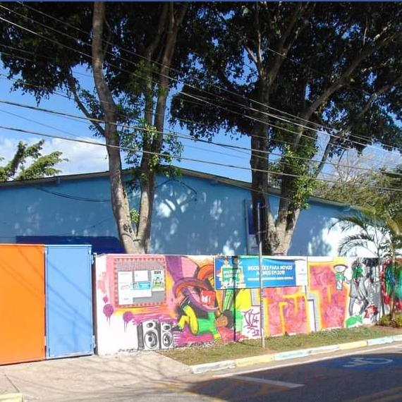
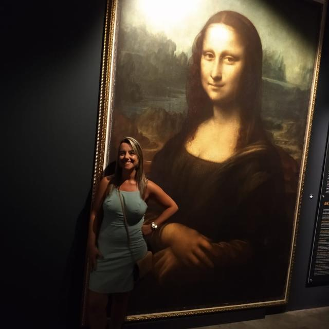
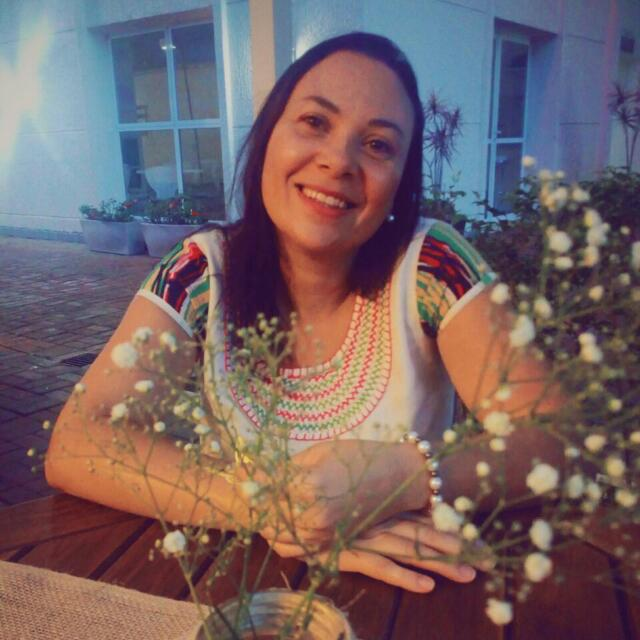

Filha de pais trabalhadores que dedicaram suas vidas para criar e educar seus 2 filhos e esforçaram-se para que estudássemos, oportunidade que não tiveram. Mãe da Giovanna (21) e do Léo (8) e casada com Fofo (Vivaldo), cristã, 43 anos.
Estudante da escola pública, na região do ABC, cursei magistério (CEFAM), Pedagogia (CUFSA), pós graduação em EAD (PIGEAD-UFF).
Professora com atuação em diferentes funções na Rede Municipal de São Bernardo do Campo há mais de 20 anos, com experiência na coordenação de projetos sociais e educacionais em escolas privadas e no Terceiro Setor.
Pedagoga apaixonada pela Escola Pública, por tecnologias e inovação.
Militante em causas sociais e ambientais, defensora da EJA, acredita que a Educação é o principal caminho para transformar vidas.
Grata pela vida, pela família, amigos e por tantas oportunidades, vivências e aprendizado em minha trajetória pessoal e profissional.
Pinheirinho SBC: bairro ecológico
Veja também em formato de livro virtual: Histórico Pinheirinho.



Após ter superado diversos desafios e obstáculos, enfim conquistei o sonho de ser uma educadora, afinal sempre fui convicta
de que somente a educação é de fato capaz de transformar uma sociedade.Os próximos passos são os aprimoramentos e a busca por novos conhecimentos e práticas para desenvolver projetos com os meus alunos.
Sou mãe de 2 lindos filhos, apoiadora dos direitos humanos, super envolvida com questões de cunho de social e apaixonada pela educação.
Entrei neste curso com o objetivo de agregar novas aprendizagens e as expectativas estão sendo realizadas a cada aula e atividade desenvolvida.
Atuo como professora de educação básica na Emeb José Arnaud da Silva especificamente com a turma do 5 ano.
Espero conseguir desenvolver um projeto significativo para os meus alunos, a partir das dinâmicas que estão sendo compartilhadas neste curso.
Sigo grata aos meus familiares por todo apoio e compreenssão em minha trajetória de dedicação à profissão e à vida pelas oportunidades de novas vivências.

Este video no site do you tube sobre Em tempos de crises, educação de qualidade é a esperança e a chance de um futuro para as crianças.